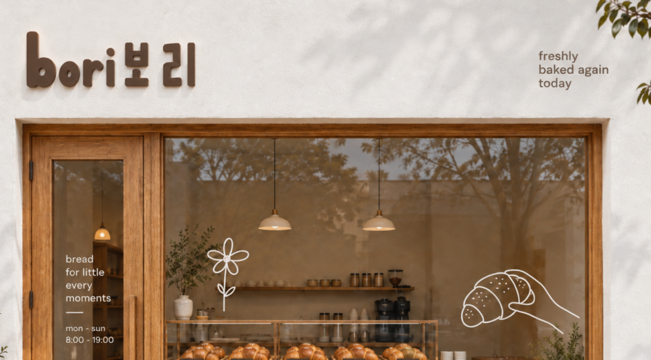

Bori Bakery
보리베이커리
BRAND DESIGN
A contemporary Korean bakery specialising in freshly baked soft breads, salt bread and filled buns. The experience should feel like discovering a small bakery in Seoul: warm, comforting and slightly playful, but still sophisticated enough to feel premium.

MY ROLE
Build a contemporary Korean bakery identity that feels warm, youthful and memorable — without relying on stereotypical Korean café aesthetics or over-designed visuals.
APPROACH
Built Bori around everyday comfort, visual restraint, and playful imperfection. Instead of relying on obvious Korean motifs, the identity draws from contemporary Korean bakery culture through soft typography, hand-drawn illustrations, warm natural tones, tactile materials, and product-led storytelling. Salt bread became the hero visual, while conversational copy such as “freshly baked again today” adds personality and warmth across packaging, signage, and merchandise.